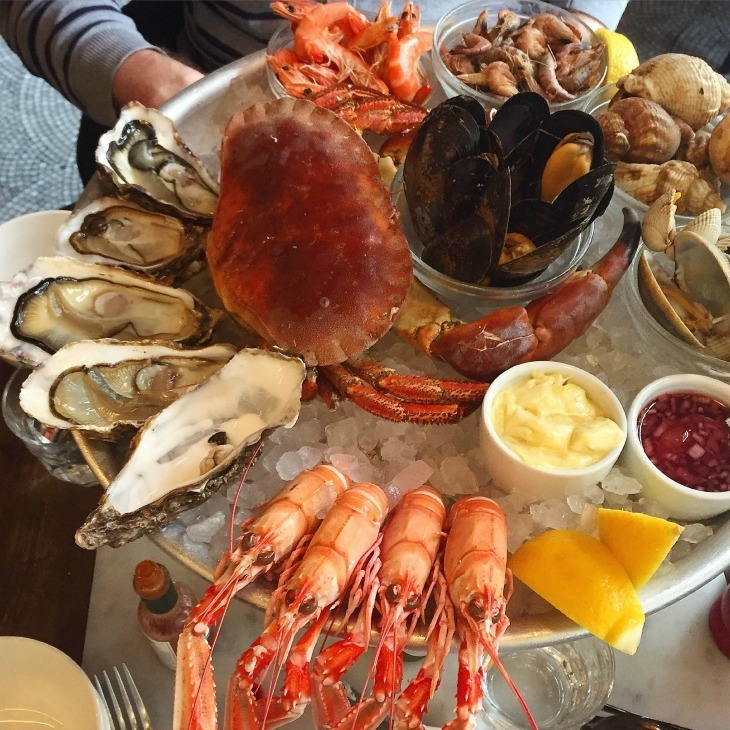

SEAFOOD RESTRURANT
Our food is made the way our consumer want it and also we have most famous dishes ever known. Paella de Mariscos. The most famous Spanish seafood dish is, of course, paella de mariscos, or seafood paella. Paella originated in the Valencian region of Spain, but it can be found all over the country.
WHERE WILL YOU FIND THEM
second flor far left of the mall.